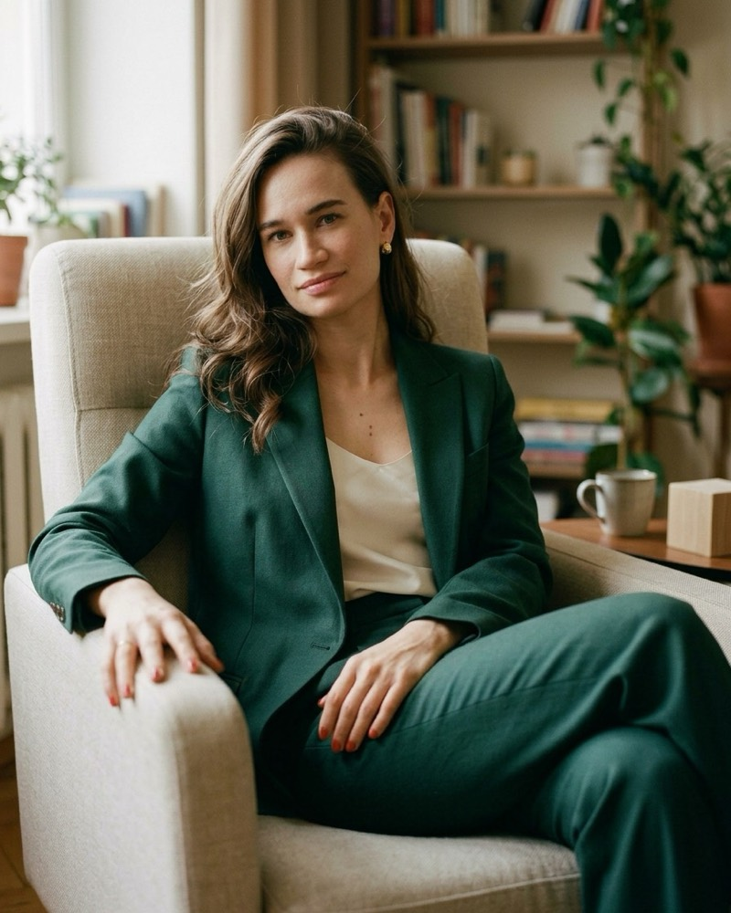
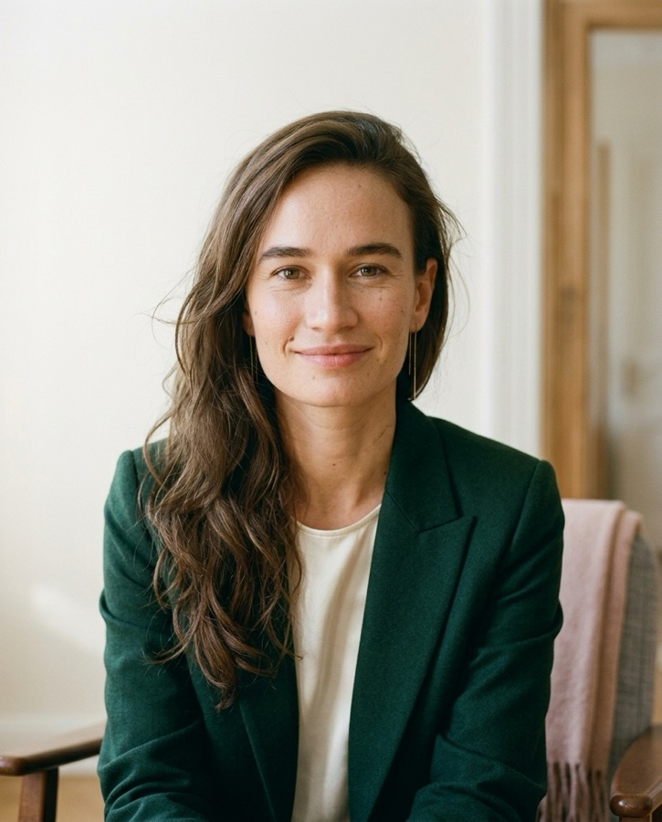

Терапия для тех,
кто устал выживать
Два часа на сессию, чтобы успеть дойти до сути
- 1.50 миндлится сессия
- 3 годапрактики
- 2000+часов практики
- 600+часов личной терапии

Вам сюда, если
Узнаёте себя?
Если хотя бы 2–3 пункта про вас – это уже достаточная причина, чтобы не оставаться с этим один на один
- Внешне вы держитесь, а внутри – напряжение, которое не отпускает
- Часто говорите «я сам(а) справлюсь», даже когда сил уже нет
- Радость будто исчезла, а усталость стала фоном
- Тревога, пустота, раздражение или апатия – без понятной причины
- Вроде «не всё так плохо», но легче не становится
- Хочется, чтобы кто-то наконец понял, как вам тяжело
Приходить к психологу, когда тяжело, – нормально.Не нужно ждать, пока станет невыносимо. Иногда поддержка нужна именно для того, чтобы до этого не дойти. Можно прийти с состоянием «вроде всё нормально, но мне плохо» – это уже причина.
Не обязательно страдать «достаточно»,чтобы получить помощь.Достаточно того, что вам тяжело.
Как я работаю
Почему мои сессии длиннее обычных
За час человек часто успевает только рассказать, что случилось, и время заканчивается на самом важном месте. У меня сессия длится 1 ч 50 мин: есть время рассказать, разобраться и дойти до того, что происходит на самом деле
Время заканчивается там, где обычно начинается самое важное
Обычная сессия
- рассказать
- разобраться
Время заканчивается там, где обычно начинается самое важное
Сессия у меня
- рассказать
- разобраться
- проработать
Мысли
Что вы себе говорите и во что верите о себе
Чувства
Что происходит внутри, под раздражением и страхом
Сценарии
Что повторяется в вашей жизни снова и снова, и почему
Метод под ваш запрос
Беру лучшее из гештальт-терапии, психоанализа и когнитивно-поведенческой терапии, использую методики арт-терапии
Сколько это займёт
Мы не обязаны работать годами. Через несколько встреч обсудим, сколько ещё нужно. Удерживать вас дольше, чем нужно, я не буду
С чем работаю
Не нужно самому гадать, к кому идти
Иногда непонятно – это к психологу или нужен врач. Разберёмся вместе
Работаю самаС этим можно прийти ко мне
- Сложности в построении отношений
- Одиночество
- Личные и семейные кризисы
- Потери и переживания горя
- Сложности после пережитых травм
- Тревожность, страхи, панические атаки
- Депрессия, апатия, потеря смысла жизни
- Низкая самооценка, неуверенность в себе
- Повторяющиеся негативные сценарии
- Хроническая усталость
- Трудности в общении
- Эмоциональная нестабильность
- Трудно проявлять себя и свои интересы
- Нелюбовь к себе
- Проблемы подросткового возраста
В связке с врачомВеду вместе с психиатром
- Панические атаки
- Тревожное расстройство
- Тревожно-депрессивное расстройство
- Генерализованное тревожное расстройство
- Депрессии
- Пограничные тенденции
- Биполярное расстройство
- Изолированные фобии
- Социальная фобия
Если я вижу, что нужна медикаментозная поддержка, направлю вас к проверенному психиатру, с которым работаю.
Не беру в работуПодскажу, куда обратиться
- Шизофрения
- Тяжёлая наркотическая зависимость
- Тяжёлая алкогольная зависимость
Здесь нужна другая помощь, и я честно скажу об этом.
Владею методиками патопсихологической диагностики – если мне необходимо увидеть более полную «картину» вашего психического состояния
Сомневаетесь, подойду ли я вам? Напишите, я отвечу лично.

Обо мне
Елена Попова
Психолог, живу и работаю в Петербурге.
«Я даже не знал(а), что так можно было»так часто говорят после первой встречи
Образование
- 2025Высшее психологическое образованиеСанкт-Петербургский государственный институт психологии и социальной работы, очно · «Практики психологической помощи»
- 2024Терапия проблемных ситуаций и личностных расстройствМосковский институт психоанализа · повышение квалификации
- 2024Позитивная динамическая психотерапия, базовый курсПетербургская школа психотерапии и психологии отношений · повышение квалификации
- 2024Патодиагностика в психологическом консультированииМосковский институт психоанализа · сертификат
- 2023Психологическое консультирование и психотерапия трудных жизненных ситуацийМосковский институт психоанализа · повышение квалификации
Первая встреча и цены
Мы работаем с первой встречи
- 1Вы рассказываете, что происходит – как можете
- 2Я задаю уточняющие вопросы и смотрю глубже
- 3Вместе формулируем, с чем будем работать
- 4Уже на этой встрече начинаем работу
- 5Договариваемся, как двигаться дальше
Если ваш запрос не ко мне или нужен врач – скажу честно на первой же встрече.
Стоимость
Разовая сессия
Когда нужно разобраться с конкретной ситуацией
Долгосрочная терапия
Когда хочется глубоких изменений
1 ч 50 мин — это почти две обычные сессии
* при оплате от 12 сессий
Вопросы
О чём обычно спрашивают
Можно начать с одной
фразы
Не нужно объяснять всё сразу. Напишите «хочу записаться», и я отвечу в течение 2–3 часов и предложу время
Написать мне в TelegramНикто не узнает, что я хожу к психологу?
Всё, что вы рассказываете, остаётся между нами. Правила конфиденциальности закреплены в публичной оферте, её можно прочитать заранее
Почти два часа — я выдержу?
За это время можно говорить без спешки и дойти до сути
Онлайн — это вообще работает?
Да. Можно заниматься из дома. Если вам важно видеться очно, мой кабинет на Васильевском острове
Сколько нужно встреч?
Мы не обязаны работать годами. Давайте начнём и через несколько встреч обсудим. Точную цифру заранее честно не назовёт никто, но я не буду удерживать вас дольше, чем нужно. Это ваша терапия
Я принимаю таблетки от психиатра — можно к вам?
Да. С рядом состояний я работаю совместно с врачом
Как перенести или отменить сессию?
Перенести или отменить сессию без потери оплаты можно, если предупредить меня не позже чем за 24 часа. В ином случае оплата не возвращается. Если встречу отменяю я, предложу другое время или верну оплату